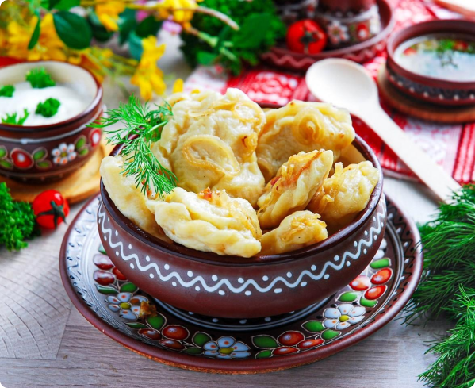
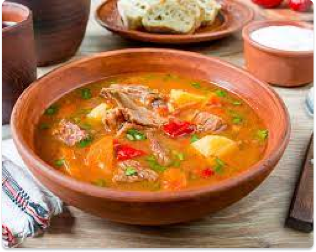
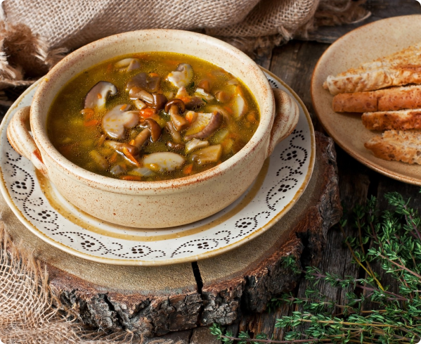

Ukainische Nationalgerichte
Borschtsch
Zutaten:
-Wasser 2 Liter
- Schweine- oder Hühnerfleisch 400-500 Gramm
-2 kleine Glitzer
-1 mittelgroße Karotte
-1 Bogen
-4-5 Esslöffel Pflanzenöl
-Zitronenscheibe
-2-3 Esslöffel Tomatenmark
-300 Gramm Sektkapsel
-4-5 mittlere Runden
- Sohle für den Geschmackbr
-1 Knoblauchzehe
- eine Prise gemahlene Nelken
- eine Prise schwarzer Pfeffer
- Lorbeerblätter
- Speisegrün (Petersilie, Dill)
Rezept:
In einem 2-3-Liter-Topf. Gießen Sie kaltes Wasser hinzu,
etwa etwas mehr als die Hälfte. Zünde es an.
Das Fleisch waschen. In ziemlich große Stücke schneiden.
Werfen Sie das Fleisch ins Wasser. Zum Kochen bringen und den Schaum abschöpfen.
2-3 Lorbeerblätter hinzufügen. Etwas Salz und Pfeffer hinzufügen.
Für den Geschmack können Sie eine Gewürzmischung hinzufügen.
Kochen Sie die Fleischbrühe mindestens eine Stunde lang.
Das Fleisch sollte weich werden und sich von den Knochen lösen.
Wenn die Brühe fertig ist, entfernen Sie das Lorbeerblatt.
Rüben, Karotten und Zwiebeln waschen und schälen.
Reiben Sie die Rüben auf einer groben Reibe und die Karotten auf einer mittleren Reibe.
Die Zwiebel in kleine Würfel schneiden.
Öl in die Pfanne gießen, mittlere Hitze einschalten.
Zwiebeln und Karotten unter Rühren etwa 10 Minuten anbraten.
Danach Tomatenmark hinzufügen; wenn es zu dick ist, etwas Wasser hinzufügen,
umrühren und weitere 5-7 Minuten auf dem Feuer stehen lassen.
Fügen Sie der Brühe zerdrückte Knoblauchzehen und fein gehackte,
geschälte frische Peperoni oder ein paar Prisen trockene Peperoni hinzu.
15 Minuten kochen lassen.
Weitere 10 Minuten kochen lassen und sofort die in große Würfel geschnittenen
Kartoffeln hinzufügen.
Wenn die Kartoffeln gar sind, normalerweise 15 Minuten
oder etwas länger, fügen Sie das Braten hinzu.
Fügen Sie dünn geschnittenen Weißkohl hinzu. Kochen Sie es etwa 5 Minuten lang.
Achten Sie darauf, das Gericht zu pfeffern und zu salzen und auch fein
gehackte Petersilie und Dill hinzuzufügen. Schalten Sie die Hitze aus und lassen Sie es stehen.
Wareniki
Zutaten:
-Kartoffeln - 500 g
-Zwiebel - 1 Stk.
-Pflanzenöl - 2 EL.
-Salz
frisch gemahlener schwarzer Pfeffer
-Butter - 50 g
-Weizenmehl - 270-300
-Ei - 1 Stk.
-Milch - 100 ml
-Salz - 1/2 TL.
-Pflanzenöl - 2 EL.
Rezept:
Die Knödelkartoffeln gründlich waschen und anschließend schälen.
Die Kartoffeln in einen Topf geben und Wasser hinzufügen.
Auf den Herd stellen und zum Kochen bringen. Bei schwacher Hitze 30 Minuten kochen lassen.
Bereiten Sie den Teig für Knödel mit Kartoffeln vor. 270 g Mehl mit Salz sieben.
Mit Eiern, Milch und 2 EL verrühren. l. Pflanzenöl. Zu einem homogenen Teig verkneten.
Bei Bedarf noch etwas Mehl hinzufügen. Den Teig zu einer Kugel rollen, in eine Schüssel geben,
abdecken und 30 Minuten ruhen lassen.
Für die Füllung der Knödel mit Kartoffeln die Zwiebel schälen und fein hacken.
Eine Bratpfanne mit Pflanzenöl erhitzen und die Zwiebel unter häufigem Rühren etwa 7 Minuten
lang goldbraun braten.
Lassen Sie das Wasser aus den fertigen Kartoffeln ab, stellen Sie die Pfanne
wieder auf den Herd und trocknen Sie die Kartoffeln etwas ab.
Dann mit Butter zu Püree pürieren. Röstzwiebeln, Salz, Pfeffer hinzufügen und umrühren.
Den Knödelteig dünn ausrollen. Schneiden Sie daraus Tassen aus (ein Glas wäre einfacher).
Legen Sie die Füllung zwischen die Becher, falten Sie sie in zwei Hälften und drücken Sie
die Ränder mit nassen Händen zusammen.
Die Knödel in kochendes Salzwasser geben. Wenn sie an der Oberfläche schwimmen,
weitere 4 Minuten kochen.
Wenn sie gar sind, geben Sie sie in einen Topf und fügen Sie Butter hinzu.
Sie können nach Geschmack saure Sahne verwenden.
Bograch
Zutaten:
-Schmalz oder Speck 50 Gramm
-Mittelgroße Karotten 2 Stk.
-Knoblauch 3 Zehen
-Paprika 2 Stk.
-Rindfleisch 600 Gramm
- gemahlener Paprika
-Wasser 2,5 Liter.
- mittlere Zwiebel 3 Stk.
- mittelgroße Kartoffeln 6 Stk.
- Tomatenmark 400 Gramm
-scharfe Paprika 1 Stck.
- Fleischrippen
-Salz nach Geschmack
- mittlerer Bund Petersilie oder Dill - 30 Gramm
Rezept:
Speck oder Schmalz in mittelgroße Würfel schneiden. Die Zwiebel fein hacken.
Die Karotten nicht sehr fein hacken. Den Pfeffer entsprechend hacken.
Die Kartoffeln je nach Größe grob in 4-6 Stücke schneiden. Knoblauch und Peperoni fein hacken.
Die Rippen einzeln aufschneiden, das Rindfleisch in mittelgroße Stücke schneiden, 1-2 Bissen.
In einem Topf bei mittlerer Hitze Speck oder Schmalz anbraten, bis Knistern und ausgeschmolzenes
Fett entstehen.
Die Zwiebel dazugeben und unter Rühren 4-5 Minuten anbraten.
Karotten hinzufügen und noch ein paar Minuten braten. Gemahlenes Paprikapulver und scharfe Paprika
dazugeben und eine halbe Minute braten. Tomatenmark und Paprika hinzufügen. Fleisch hinzufügen.
Fügen Sie Wasser hinzu, sodass das Fleisch oben bedeckt ist. Füge Salz hinzu.
Zum Kochen bringen, die Hitze reduzieren und kochen, bis das Fleisch zart ist.
Dies wird etwa eine Stunde dauern. Fügen Sie Wasser hinzu, sodass nach der Zugabe der
Kartoffeln eine mitteldicke Suppe entsteht.
Kartoffeln hinzufügen. Bei Bedarf Salz in die Suppe geben. Etwa 20 Minuten kochen,
bis die Kartoffeln weich sind. Zum Schluss Knoblauch und fein gehackte Kräuter hinzufügen.
Umrühren und 10 Minuten stehen lassen. Je nach Wunsch mit oder ohne Sauerrahm servieren.
Pulz Suppe
Zutaten:
-Steinpilze 100 g
-Karotte 1 Stk.
-Lorbeerblatt 3 Stk.
- Gemahlener schwarzer Pfeffer
-Bogen - 2-3 Stk.
-Butter - 100 g
-Pflanzenöl - zum Braten
-Sauerrahm (oder Sahne) - 200 g
-Mehl - 2-3 EL. Löffel
-Wasser - 3-4 l
Rezept:
30 Gramm Pilze schneiden.
Dann den Topf mit Wasser füllen, salzen und 1 Stunde kochen lassen.
Die gesamte Flüssigkeit durch ein Sieb abgießen. Die Pilze beiseite stellen und
die Brühe zurück in die Pfanne gießen.
Die Karotten auf einer feinen Reibe reiben und in die Brühe geben.
Probieren Sie das Salz aus und fügen Sie, wenn Sie nicht genug Salz hinzugefügt haben,
mehr Salz hinzu.
Lorbeerblatt und schwarzen Pfeffer hinzufügen. Auf das Feuer stellen und kochen,
bis die Karotten gar sind.
Die restlichen Pilze fein hacken.
Die Zwiebel in Würfel schneiden, mit Butter (30 g) in eine Pfanne geben, leicht mit
gemahlenem Pfeffer bestreuen und anzünden. Fügen Sie ein paar Esslöffel Pflanzenöl hinzu
und braten Sie die Zwiebel an, bis sie leicht goldbraun ist. Übertragen Sie die vorbereitete
Zwiebel auf einen separaten Teller.
Geben Sie die restliche Butter in eine saubere Bratpfanne. Mehl in die geschmolzene
Butter geben und bei schwacher Hitze unter ständigem Rühren kochen.
Sauerrahm hinzufügen. Umrühren und noch eine Minute brennen lassen.
Fügen Sie der resultierenden Mischung nach und nach jeweils 1-2 Schöpflöffel Pilzbrühe
hinzu und verrühren Sie alles mit einem Schneebesen. Wir gießen die Brühe so lange hinzu,
bis sie aufgebraucht ist oder bis die Sauerrahm-Mehl-Mischung so dünn ist, dass sie in die
Brühe gegossen werden kann. Wenn die Masse deutlich dünner geworden ist, fügen Sie Muskatnuss hinzu.
Nachdem Sie die Brühe mit der Sauce vermischt haben, fügen Sie Pilze und Zwiebeln hinzu.
Auf das Feuer legen und warten, bis es kocht.